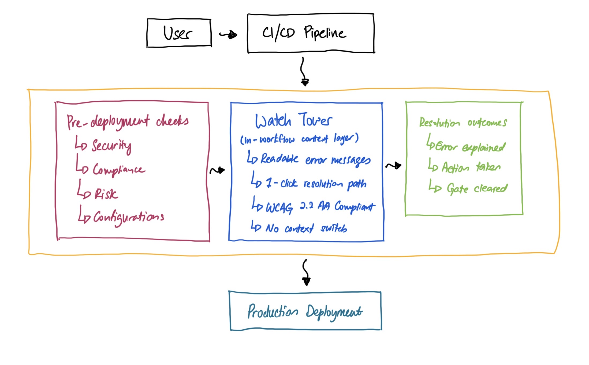

Rebuilding trust in a bank’s developer platform
Thousands of engineers had a new platform to get code into production. Most of them were still using the old one. This is how we changed that: the call to fix trust before features, and the three things we rebuilt to earn it. Deployment visibility, requests and approvals, and onboarding.
Developer Experience
Trust before
features.
A new platform most engineers avoided, and the call that moved them onto it.
Context
The problem
Engineers at a global bank had two ways to get code into production: a legacy tool that was fast but fragile, and a new platform built to replace it. The new platform half-worked. Much of it was broken or slow, and most of what engineers needed had not yet migrated across, so they stayed on the old tool. The bank was paying for a platform nobody trusted.
Every release had to clear a set of pre-deployment checks, which verify a service against quality, compliance, security and configuration requirements before any code reaches production. For thousands of engineers this was a daily necessity, and a daily source of frustration.
The team
One graduate designer, no research
The previous design lead left shortly after I arrived, and the team was one graduate designer. There was no research practice. I built the team out from there, and set the design vision and strategy as a peer to the product and engineering leads, deciding with them what got built and in what order.
Discovery
What I found
I spent the first weeks auditing the platform and sitting beside engineers while they deployed. The audit showed what was broken. Sitting beside people showed what it cost: time lost waiting, redeploying, and reworking releases that failed for reasons buried in logs nobody read.
Four themes came out of it: the onboarding tax on new hires, the mental load of switching between tools, dead-end error messages with no next step, and velocity lost to stalled releases.
Research signals from users across seniority levels, clustered into four recurring themes.
Onboarding Tax
New users lost days to their first deployment, and senior engineers absorbed the gap as unofficial "shadow support", making the learning curve a team-wide drain, not an individual one.
Mental Load
Understanding a single failure meant constant context-switching across terminals, wikis, and chat. The cognitive overhead, not the fix itself, was the real cost.
Dead-End Feedback
Errors named what failed in technical labels, but never what to do, who owned it, or where to go next. Users were informed, but not enabled to act.
Lost Velocity
Releases stalled for days at opaque compliance gates while users played detective across systems. The bottleneck was missing guidance, not missing capability.
Journey Map
Before & after: a new hire's pre-deployment journey
To pressure-test the problem and the proposed solution, I mapped the end-to-end journey for a user new to the platform, before the Watch Tower and after.
User journey map · Pre-deployment checks (before: Watch Tower)
Code review approved. Ready to push to production.
Triggers pipeline. Pre-deployment checks begin automatically.
One or more gates turn red. Error label surfaces in legacy UI.
Opens terminal, checks docs wiki, searches Slack, asks teammates.
Finds a senior user. Explains situation. Waits for response.
Sits idle. Release stalled. Senior user context-switches.
"Finally ready to ship."
"This should be quick."
"What does 'legacy compliance gate' even mean?"
"I've been at this for a while now. Nothing makes sense."
"I hate having to ask again. They're going to think I don't know anything."
"My release has been stalled for days while I play detective."
User journey map · Pre-deployment checks (after: Watch Tower)
Code review approved. Ready to push to production.
Triggers pipeline. Pre-deployment checks begin automatically.
One or more gates turn red. Watch Tower appears.
Reads plain-language explanation. Sees owner, sees action. Clicks one-click resolution link.
Follows guided steps independently. No Slack. No senior user needed.
Gate clears. Deployment proceeds. Done.
"Finally ready to ship."
"This should be quick."
"A gate failed, but the platform is already telling me what happened."
"It's telling me exactly who owns it and what to do. That's all I needed."
"I didn't have to ask anyone. I just fixed it."
"Gate cleared. On to the next thing."
The decision
The call
The product owners had roadmaps full of features. The engineers didn’t need features. They needed to believe the platform would do what it said. So the first call was to pause new feature work and fix parity and reliability first. I made that case on usage and adoption data rather than opinion, and put a cost on the engineering time lost to slow and failed deployments. It was not a popular call, I owned it, and I led the migration across teams that followed.
That decision set four objectives:
- Reclaim engineering velocity. Eliminate dead time by surfacing resolution paths at the point of failure
- Demystify compliance. Translate machine-first labels into human-first insights engineers can act on
- Enable autonomy. Reduce shadow support dependency through self-service remediation
- Bridge the onboarding gap. Shorten the learning curve for new hires
The trade-off
Security, every time
This is a bank. Every time we made something easier I had to show risk and security that we hadn’t weakened a control. Sometimes the answer was no. I designed to the constraint instead of around it.
The work
What we rebuilt
Visibility: the Watch Tower
Regulatory blockers and runtime errors were invisible until something failed. We put guidance at the point of failure: a persistent, contextual panel inside the deployment workflow that explains why a check failed in plain language and what to do next, with one-click links to the fix. It also carried deployment progress, so an engineer always knew where a release stood, and alerted engineers who were away from their desk.
The legacy interface functioned as a passive ledger. A static list of compliance states with high cognitive load, forcing users to hunt across fragmented systems for any resolution path. The Watch Tower replaced it with two things:
The "Why"
Cryptic error codes replaced with human-readable explanations. Every failure state tells the user exactly what went wrong and why, in plain language.
The "How"
A dedicated "Suggestion/Action" column with one-click deep links to resolution paths. No more detective work across multiple systems.
Design Decisions
What we considered, and what we rejected
Before landing on the Watch Tower, we stress-tested three alternative directions. Each solved a piece of the problem but failed the core test: keep the user in-flow, at the point of failure.
Systems Thinking
Placing the Watch Tower where the work happens
The critical design decision was where to intervene. Rather than adding a new surface, we placed the Watch Tower inside the user's existing deployment view, at the exact point of failure.

Watch Tower placement within IDP, sitting between pre-deployment gates and resolution outcomes, inside the user's existing workflow.
Rollout
A three-phase plan, each gate-checked before the next began.
Phase 1 · Foundation
Error taxonomy and signal map
Audited every failure state across the deployment pipeline. Grouped by root cause, frequency, and time-to-resolution. Built a shared taxonomy that gave engineering, product, and design a common language for the problem space.
Validate
Phase 2 · Pattern
Progressive disclosure, validated at small scale
Designed and tested the contextual guidance pattern with a single release type and a small cohort of teams. Validated the interaction model before any platform-wide commitment.
Validate
Phase 3 · Scale
Pattern adoption across the IDP
Once the model held, the same pattern extended beyond Watch Tower into other surfaces, establishing how the entire platform would surface guidance in future. What other teams inherited was a component, not a spec: one surface that handles any gate type by swapping content rather than structure, accessible to WCAG 2.2 AA by default. Adopting it meant adopting the accessibility and interaction work already done, instead of solving it again.
We didn't ship a feature. We shipped a pattern that scaled.
We built the case in three layers: engineer hours recovered per deployment, the drop in support escalations to the platform team, and the downstream effect on release velocity. What survived that validation was directional, repeatable, and consistent across regions and team types.
What came next
From launch to steady state.
Watch Tower wasn't a single launch. It was a maintained product across three iterations.
v1 shipped to a defined release type and a controlled cohort. Within weeks, telemetry surfaced two patterns the design hadn't anticipated: error recurrence after partial resolution, and mid-deployment context loss when an engineer left and returned to a paused release.
v1.5 introduced a resumable state and a recurrence indicator on the guidance surface.
v2 extended the pattern across all release types and added a feedback loop directly inside the workflow, so engineers could flag missing or misleading guidance without leaving the surface they were working in.
The lesson that shaped the broader roadmap: a contextual guidance layer isn't a static reference. It has to learn from what it surfaces. And the design has to make that feedback frictionless, because the moment friction enters the loop, the loop stops learning.
Requests and Approvals
Context travels with the request
The approval flow worked, but approvers could not see what they were approving. Requesters had no way to attach context, so every request arrived with a side conversation in chat. I owned the rebuild. Context now travels with the request, approvals that never needed a human no longer wait for one, and the regulatory checks run before deployment rather than after it, so engineers fix problems while they still can. Approvers stopped chasing requesters over chat.
Onboarding
The platform teaches itself
I owned the developer documentation and the onboarding guides, and they fed the platform’s AI assistant. An engineer could ask the platform how to do something instead of asking the person next to them, which is what turned onboarding from a tax on senior engineers’ time into something a new hire could do alone.
Leadership
Building the capability
I built the design team out from that one graduate designer into a team across three time zones, each designer embedded with the engineering team in their own city. I paired every designer with an engineering lead locally, so they learned the developer workflow and got answers from the engineer sitting next to them rather than from head office on the other side of the world.
I wrote the progression framework with HR, ran the performance reviews, and several designers were promoted. I ran a weekly session where engineers and customers brought problems straight to the design team. I took over the platform’s half-built design system and owned it to completion, from tokens and governance up, and it became the foundation of the bank’s global design system.
Outcomes
What changed
Engineers moved onto the platform, and product managers followed. Deployments got faster because problems surfaced earlier, and the pattern was adopted across the platform.
We measured six things:
- Time to deploy
- Reported clarity of information
- Support escalations
- Self-sufficiency, resolving deployments without another team
- Time experienced engineers spent resolving deployment issues
- Rated the most useful part of the pattern, across all experience levels
The figures stay with the bank.